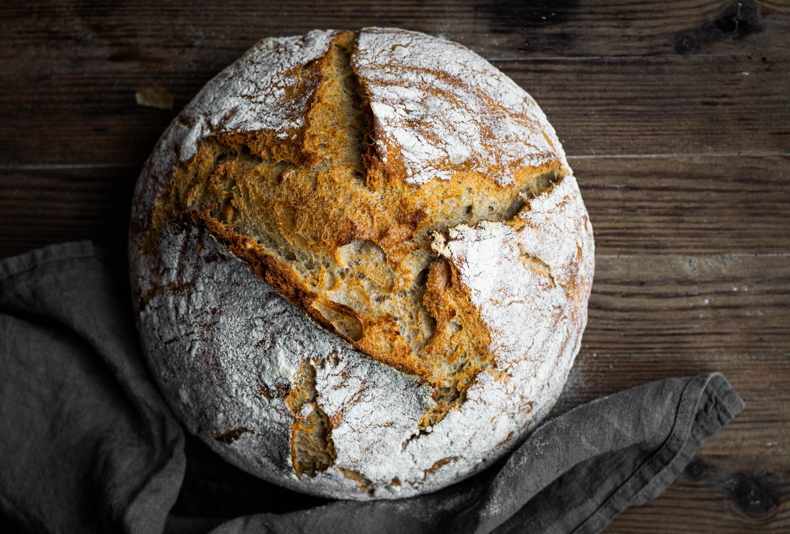

Baguette
A baguette is a long, thin loaf of French bread that is commonly made from basic lean dough. It is distinguishable by its length and crisp crust.
Learn More
Challah
Challah is a special bread of Ashkenazi Jewish origin, usually braided and typically eaten on ceremonial occasions such as Shabbat and major Jewish holidays (other than Passover)
Learn More

Sourdough
Sourdough or sourdough bread is a bread made by the fermentation of dough using wild lactobacillaceae and yeast, which imparts a sour taste and improves keeping qualities.
Learn More